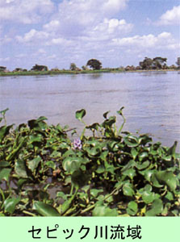

|
１．昭和１６年１２月頃（１９４１年）
|
|
|
太平洋戦争が勃発した時は、旧満州国黒河省孫呉に布陣していた関東軍・第四軍（軍司令官横山中将）の軍通信隊・無線小隊長
として、ソ連極東軍と一年間対陣していた。
翌１７年１０月、旧新京に駐屯している電信第三聯隊第二中隊に復帰し、隊付将校をしていた。
１１月１０日頃、我が部隊は、鉄嶺で合同演習をしていたが、大本営から出動命令を受け、演習は直ちに取り止め、全員旧新京に帰営した。
|
|
２．昭和１７年１１月１５日（１９４２年）
|
|
|
松本少佐（当時材料廠長）が部隊長（電三先発隊）に任命された。松本部隊の『編成』要領は各中隊から無線一個小隊を選抜し、
５個無線小隊を編成した。全装備は二号無線機２０基、三号無線機２０基であった。
さらに材料廠から器材小隊・一個小隊が編成された。
無線一ケ小隊の兵力は小隊長以下４９名で無線四ケ分隊から編成されていた。
無線一ケ分隊の戦力で、戦場ではしばしば独立無線隊として作戦通信を担当した。
松本部隊（無線通信隊）はこの日に新京駅を軍用列車で釜山に向った。
|
|
３．昭和１７年１１月１７日
|
|
|
釜山に到着。西面廠舎に二日間滞在した。ここで始めてアメリカ兵の捕虜をみた。フィリッピンのバタン半島攻略作戦で我が軍
に投降したアメリカ兵捕虜達が沢山いた。私は、その捕虜に『どんな訳で捕虜になったか？』と、尋ねてみたら、彼等は皆んなで
口を揃えて
『空を飛んでいるのは、日本軍の飛行機ばかりで物凄い爆弾を落とす。アメリカ軍には飛行機がない。どうしょうもなく俺たちは
手を上げ降参した』
という。しかしそう言った彼等の表情は、意外に明るかった。相手がこんな敵兵なら組し易いと安心した。捕虜を監視している日
本軍の憲兵に
『捕虜はこれからどうするのか？』と質問してみたら、憲兵の話では
『今から満洲に送り、道路作業に従事させる』という事であった。季節はこれから冬に向かう十一月だ。満洲の冬は骨身に応える。
フィリッピンにいた彼等は、果たして生きて行けるだろうか？と不安に思った。
|
４．昭和１７年１１月１９日
|
|
|
広島市内に二日間民宿した。ごく恵まれた一部の兵は家族と面会も出来たようだ。また、手紙を出したり、夜ひそかに外泊した
者もいた。勿論、こんな事は堅く禁止されていた。色々あったが、松本部隊は宇品港を出港しラバウルに向った。
|
５．昭和１７年１２月２日（１９４２年）
|
|
|
ニユーブリテン島ラバウルに上陸した。広島を出港してラバウルに到着するまで実に十二日間を要していた。敵の攻撃は一度も
受けなかった。
第十八軍・軍通信隊長(無線通信隊)
松本善次少佐(５３歳、少尉候補者)
指揮班長 折田誠一少尉 （現九州大・工）
無線小隊長 福崎松雄少尉 （現北九州工大）
同 山口安治少尉 （現東北大・工）
同 山崎 勝少尉 （現関西学院大）
同 武井 武少尉 （少尉候補者）
同 武吉新之助少尉（現名古屋工大）
器材小隊長 藤原計勇少尉 （現日大・工）
小隊長は１名を除き、全員予備役の幹候出身者ばかりだったので、仲間意識のせいで戦争に征くというのに、少しも不安はなかった。
|
６．昭和１７年１２月２３日（１９４２年）
|
|
|
パプアニユーギニア・マダンに花輪支隊・軍通無線隊長として敵前上陸した。
マダン敵前上陸部隊名は下記の通り。
花輪支隊（第五師団・歩兵二ケ大隊）（指揮官は花輪中佐）
飛行場設定隊
高射砲隊
道路構築隊
軍通信隊・山口無線隊主力（一号無線機一基、二号無線機一基、）
小隊長以下１５名。第三無線分隊長西村伍長。当番兵木下上等兵。
上陸当日の８時頃、敵の大空襲を受け、揚陸した軍需物資が大被害
を受けました。
|
７．昭和１８年１月１日
|
|
|
マダンにて花輪支隊長の指示で、花輪支隊指揮下の各独立部隊長が集まり『正月元旦の祝宴』が催された。私も軍通の隊長とし
て招待されました。どこか面映ゆかった。シンガポールから持ち帰った戦利品のシャンペンで乾杯となった。酒に弱かった私をイン
テリ土木屋さんと言って花輪中佐がからかった。
|
８．昭和１８年１月×日
|
|
|
ラエから東方面に優勢な米英連合軍が反撃して来た。
第十八軍の守備範囲はホーランジャからラエまで延長千キロメートルとなった。ホーランジャ以西は第二方面軍の守備範囲となる。
前面の敵の総大将はマックアーサー大将でした。
|
９．昭和１８年３月１日
|
|
|
第五十一師団（宇都宮編成）がラエ上陸を敢行したが、敵の空襲で全滅した。軍通信隊長（内田中佐）以下９２名が参加したが、
生存者は僅か１９名となった。友軍の中には、海上で３、４日漂流し、敵に助けられ捕虜になった者もいた。
|
１０．昭和１８年４月１日
|
|
|
アムロン高地に軍通信隊マダン合同通信所が開設され、この時、私は合同通信所長に任命された。軍司令部所在地で最高責任者と
して作戦通信を指揮することになり、晴れがましい最高の戦場でした。思う存分活躍しました。
|
１１．昭和１８年４月中旬
|
|
|
安達軍司令官閣下がマダンに進出して来た。田中作戦参謀はアムロン高地を偵察し、ジャングルの中に既に軍司令部位置を設営し
ていた。参謀部の入り口に黄色いパパイヤの実がなっていたのが印象に残っている。
アムロン台地は一面のバナナ畑で、バナナの花に赤と緑の色をした美しい小鳥が一羽とまっていて蜜を吸っていた。その美しい様に
神秘を感じ初めて見る熱帯の風景に感動を覚えました。誠に美しい眺めだった。砂糖キビも所々に茂っていて、生まれて初めて食べた。
アムロン高地には小さな小学校があり、田中参謀に相談して、この小学校に軍通信所を開設した。北側にはパンの木が茂っていて敵
機からの襲撃を遮蔽していた。ガラス製の灰皿を田端少佐に進呈したら、こよなく愛でていたようだった。時々『山口少尉！この灰皿
でタバコをのむと旨いよ』と言って褒めてくれた。
|
１２．昭和１８年７月×日
|
|
|
第八方面軍司令官今村均大将閣下がマダンを視察に来た。
この日ばかりはマダン上空を飛んでいる飛行機は友軍機ばかりで、ゼロ戦などの戦闘機が百機？はいたであろうか。よくもこんなに
沢山の飛行機があるものだと心強く嬉しかった。
|
１３．昭和１８年９月９日
|
|
|
日独伊三国軍事同盟の盟友イタリアは連合軍に無条件降伏した。何の感情も湧かない。
|
１４．同日
|
|
|
ラエ守備隊がフィニシテル山脈を越えて、マダンに退却を開始した。兵力は第五十一師団と海軍第七根拠地隊の８千６５０名だったという。
ラエからマダンまで約３５０キロメートルを撤退するのに一か月以上を要した。山口無線小隊の第一分隊長大森幸明軍曹もその中にいた。髭
はぼうぼう軍服は破れ、乞食の様な格好で退却して来た。武井少尉は無線機を捨て銃も捨て丸腰で、退却して来たので内田部隊長に凄く怒
られたそうです。怒る方がおかしいと思った。
|
１５．昭和１８年１０月×日
|
|
|
フインシュハーヘンに敵大部隊が上陸して来た。マダンからの距離は３１０キロメートル。同僚の山崎勝中尉と林道繁中尉の両名
はこの戦闘で戦死した。冥福を祈る。
|
１６．昭和１８年１２月２５日
|
|
|
真夜中の午前２時頃から約２時間半に亘りマダン沖の海上から猛烈な艦砲射撃をうけた。ジャングルの中が砲撃音に共鳴しまるで
嵐のようだった。その内の一発が軍司令部の防空壕に命中し、電報班長倉重大尉は生き埋めになったが幸いに生命は助かった。この時は、
てっきり敵が上陸して来るものだと観念していたが、艦砲射撃だけで終わった。夜が明けてから自分の手を見たら、右手の掌とピストル
の表面には、べっとり脂汗がにじんでいた。敵が上陸して来たら最後はピストルで自決するつもりでいた。
|
１７．昭和１９年１月１８日（１９４４年）
|
|
|
軍通信隊本部の一部の者はホーランジャーに転進を開始した。
マダンとホーランジァまでの距離は７００キロメートル。軍通信隊として最後にマダンを撤退した我々はひとまず、ハンサまで３００キロ
メートルの陸路を徒歩で退却し、昭和１９年２月１８日頃ハンサに到着した。マダンを出発してから約３０日掛かっていた。当時の健
康状態と食料事情と３０度を越す高温多湿の熱帯特有の気象を考えると、１日に１０キロメートル行軍は驚異的な行軍であった。か
っては５キロメートルしか行軍出来なかった事もあった。ハンサまでの途中のジャングルの中に、凄くぶぎみな沼があり、そこに
独立工兵隊が架けた桟橋が印象に残った。
|
１８．昭和１９年２月上旬
|
|
|
マァシァール群島、カロリン諸島、ニユーギニア島は敵に制圧され、日本軍の最大拠点であるマリアナ群島、サイパン島を敵連合軍が攻撃
して来た。
|
１９．昭和１９年３月上旬
|
|
|
軍通信隊の本部はボイキンにほぼ終結完了していた。
私共無線小隊はハンサから約４０日掛かって４月１５日頃ボイキンに到着した。その途中で見たウエワク日本軍陣地は、敵の空襲と
艦砲射撃で、焼け野が原になっていた。
|
２０．昭和１９年４月２２日
|
|
|
ホーランジァに四個師団の米陸軍が上陸し日本軍は全滅したという。一方、猛軍は、部隊名はその儘で、第八方面軍の指揮を離れ
第二方面軍の隷下になっていた。この時は、そんな事情は知りませんでした。
長い年月の戦闘で消耗が激しく、兵力の立て直しを計るため、猛軍の全軍はホーランジァに集結中でした。そこで休養を取り、日本
に帰るという噂がしきりに飛んでいた。
衛生兵、病弱者、経理関係の者は先発して、ホーランジァに到着していたが、これらの非戦闘員は上陸して来た敵にあっけなく全滅した。
|
２１．昭和１９年４月２５日
|
|
|
ゴマンさん（宮永大尉）は、高橋見習士官を連れて，意気揚々とボイキンを発ちホーランジァに向かった。
……ゴマンさんは敵が上陸して来た事を知る由もない。……
田端少佐は、大発に乗ってホーランジァに向かっていた。彼は西方に行く敵船団を発見したので、船舶工兵に『無理やり接岸を命じ
』当番兵と二人で、ボイキンに戻って来た。
……戦場離脱の罪を犯したのです。……
彼は軽い『謹慎』という処分で済んだ。一方、そのままホーランジァに向かった大発は、敵船団に巻き込まれ全員戦死してしいる。
この辺の事情をどう判断したら良いものか？難しい所である。
|
２２．昭和１９年７月１０日
|
|
|
アイタペ作戦が開始された。敵はホーランジァとウエワクの中間にあるアイタペに上陸して来たので、猛軍は分断されてしまった。
二か月に亘るアイタペ作戦は六万有余の戦死者を出し敗北に終わった。猛軍・安達軍司令官は死に場所を求めたのであろうか？。
また、宮永新作大尉はホーランジァに向かう途中に、アイタペに上陸して来る船団を発見し
『敵船団がアイタペに上陸する様を、逐一、無線で軍司令部に報告する』という武功を立てた。
山口無線小隊第三分隊長西村昇軍曹はアイタペ作戦で、直撃弾を受け、肉が無線機に飛散すると言う壮烈な戦死を遂げた。
|
２３．昭和１９年８月３日
|
|
|

残存の第十八軍はウエワク西方のセピック河流域で自活体制に入った。従って第十八軍通信隊もウエワクの山南地区に集結して
自活を始めました。
|
２４．昭和２０年３月中旬（１９４５年）
|
|
|
軍通信隊は一か所に集結した。緒戦以来、有線通信兵と無線通信兵は別々に行動していたが、一緒に自活することになりました。
|
２５．昭和２０年８月２３日
|
|
|
『山口中尉は戦闘を中止し、直ちに本隊に復帰すべし』という命令を受領した。
部下１２名を指揮し斬込隊長としてヌンボクに向かう途中、この命令を受けた。
第二次世界大戦が始まってから、実に４年３か月という長期に亘り従軍した戦争は遂に終わったのである。この命令を受け取った時
は嬉しくて飛び上がって喜んだ。
終わり
|